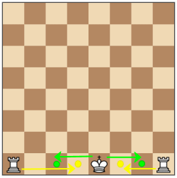
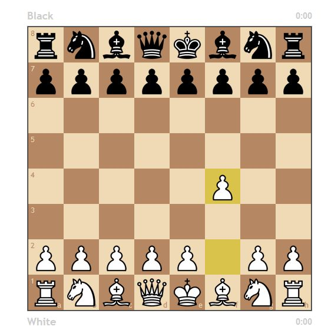
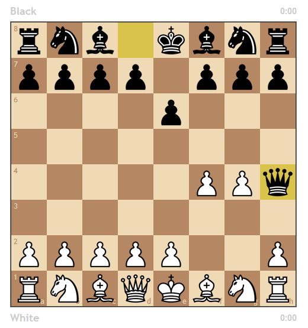
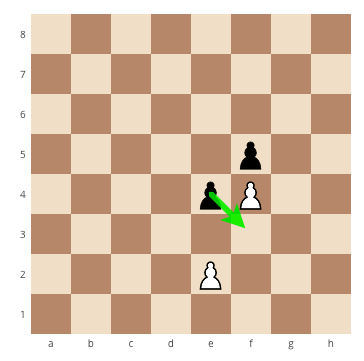

Castling involves the king and the rook. There are 2 ways you can castle. The first way is castling on the kings side where there is only a rook, bishop and a knight. In order to castle the knight and the bishop have to be removed so the king and the rook have a clear path. Then the king can move 2 spaces to the right and the rook can 'jump'over the king and move 2 spaces to the left.
When castling queen side the queen, bishop and the knight have to be removed so the king and the rook have a clear path. The king can then move 2 spaces to the left and the rook can 'jump' over the king and move 3 spaces to the right. Look at the picture bellow for more detail.
The 2 move check mate is usually done by the black team. It is a play where the white pawn on f2 moves to f3 and the pawn on g2 moves to g3. The black queen can then move to h4 to put the king in checkmate. Take a look below how this process works.
White pawn on f2 moves up 1 or 2 squares

Black pawn on e7 moves up 1 or 2 squares.

The white pawn on g2 MUST move up 2 squares in order for the 2 move checkmate to work
The Black king then moves to h4 to call a check mate!!
En passant is a french term meaning 'in passing'. En passant is a very complicated move done by the pawns. En passant is when 1 pawn captures another by moving diagonally IN FRONT of the other. This happens when both pawns are next to eachother and 1 moves diagonally in front of the other. Take a look at the image bellow:
As you can see in the image, the black and white pawns are next to each other and the black pawn is able to capture the white by moving diagonally in front of it. Most chess players forget about this move and it is not well known in the game
You may remember that i had talked about pawn promotion in Different pieces and how they move. Pawn promotion is very simple, all you have to do is get your pawn to the other side of the chess board and you can choose to upgrade your pawn to a; rook, bishop, knight or queen. Many people choose queen but it depends on what you need in your game that you are playing.
Return Home